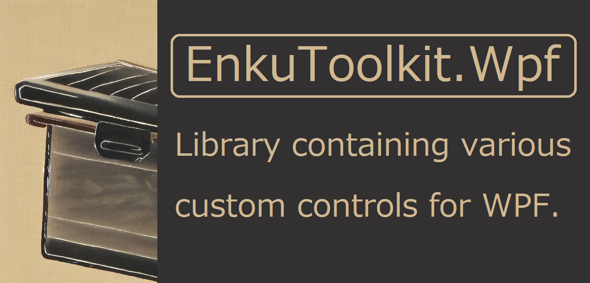

概要
本ライブラリはWPFの標準搭載されている機能の中で不足していると著者が感じた機能を搭載した
MITライセンスのOSSライブラリです。
具体的には以下のような機能を含みます。
- カスタムコントロール
- 独自のアニメーションエフェクト機構
- 既存のコントロールを拡張するための添付ビヘイビア
- 値コンバータ
- マークアップ拡張
- ViewService
二つのアセンブリの解説


本ライブラリはWPFのアセンブリに依存するEnkuToolkit.Wpfと
ViewModelから呼び出し可能なWPFのアセンブリに依存しないEnkuToolkit.UiIndependentの
二つのアセンブリから構成されています。
Nugetからインストールする際は以下の点に注意してください。
ViewとViewModelを同じプロジェクトで管理する場合EnkuToolkit.Wpfは
EnkuToolkit.UiIndependentに依存しているのでNugetからインストールするアセンブリは
EnkuToolkit.Wpfのみをインストールしてください。
ViewとViewModelを異なるプロジェクトで管理する場合は
View用のプロジェクトにEnkuToolkit.Wpfをインストールして、
ViewModel用のプロジェクトにEnkuToolkit.UiIndependentをインストールしてください。
xaml上から本ライブラリのクラスにアクセスするには
xaml上から本ライブラリの全てのクラスにアクセスするには下記のxml名前空間からアクセスしてください。
xmlns:et="https://github.com/StdEnku/EnkuToolkit"
ドキュメント
- 画面遷移時にアニメーションエフェクトを実行する
- タイトルバーをカスタマイズする
- バインディングで変形操作を行う
- 既存のコントロールにてアニメーションエフェクトを使用する
- Windowの位置やサイズを保存して次回起動時に以前の状態を復元する
- 画面遷移時にViewModel上でパラメータを受け取る
- コンバーターを用いて四則演算を行う
- 三項演算子コンバーターを用いて助長なトリガーとアクションを排除する
- アプリケーションリソースをマークアップ拡張から取得する
- xaml上でViewModelのオブジェクトをDIコンテナから取得する
- ViewModelから画面遷移を実行する
- ViewModelからダイアログを表示する
- ApplicationクラスのPropertiesをViewModelから取得する
- セルの内部をカスタマイズ可能なカレンダーコントロールを使用する